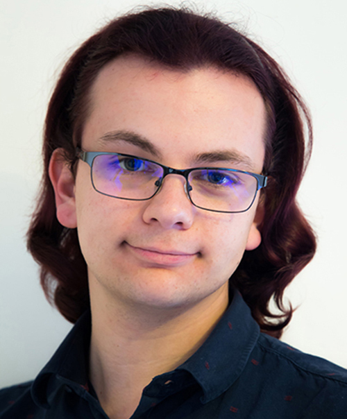
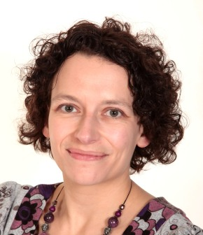
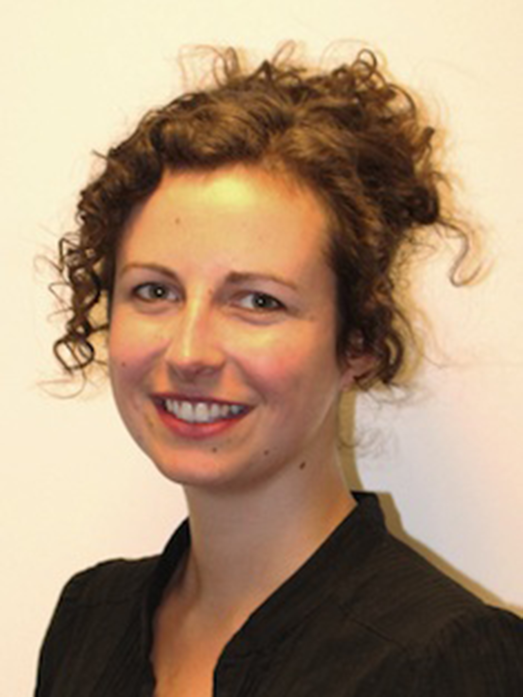

The Impact of Gender on Conference Authorship in Audio Engineering
The field of audio engineering has historically been male dominated, and has thus led to a male-biased mindset within the industry. Despite evidence of an increasing number of women involved with audio engineering and high-quality home audio systems [1], this mindset has not changed drastically; similar beliefs are still displayed about the role of women [2] throughout industry and academia - with anecdotal evidence of this mindset cropping up at professional conferences.
Professional associations are a useful indicator for analysing the intersection between industry and academia. One such association within the field of audio engineering is the Audio Engineering Society (AES). The AES, formed in 1948, has more than 12,000 members worldwide, and regularly organises conferences, conventions and the publication of a monthly journal. Recently, the AES has started to make attempts to combat the issues of gender diversity within audio engineering through the formation of a Diversity and Inclusion Committee, and the alignment of the British section of the AES with the UNWomen ‘HeForShe’ campaign.
However, the first stage in being able to address any problems is to fully characterise it. The figures below shows the distribution of author gender across AES conferences from 2012-2016, according to a number of variables of interest. An associated research paper in IEEE Transactions on Education Special Issue on Increasing the Socio-Cultural Diversity of Electrical and Computer Engineering and Related Fields, Young et al 2018, (doi.org/10.1109/TE.2018.2814613) describes the methodology used and findings in detail. The dataset is available at: (doi.org/10.5281/zenodo.1249693).
This on-going study is part of the Gender Diversity in Audio project at the AudioLab.
- S. Gardiner, “Forget High Fidelity: How women are reclaiming record stores,” 2017. [Online]. Available: http://mixmag.net/feature/forget-high-fidelity
- J. Delingpole, “The way to a man’s heart is through his speaker system,” The Spectator, 2013. [Online]. Available: https://www.spectator.co.uk/2013/11/small-audio-dynamite/
How it works
A list of authors was generated for AES conferences from 2012-2016 using the conference proceedings available online. For each author in the generated list, gender is determined via a multi-step process where self identified pronoun of the author takes priority. If this step doesn’t produce a result, several subsequent steps are employed. If no gender can be determined, the entry is labelled as ‘Unknown’.
How to use the interactive results
Hover over the bars to see the numerical breakdown for each result. Click on the legend labels (Non-binary, Unknown, Female, Male) to re-order the results by that label.
Please use a modern browser with JavaScript enabled to see the interactive results.
Authors
Kat Young kaey500@york.ac.uk
 Kat Young received the MEng (Hons) in Electronic Engineering with Music Technology from the University of York in 2015. They are currently pursuing a PhD in the same department, looking at the feasibility and robustness of near-field binaural audio using computational simulation. They were heavily involved in the society Supporting Women in Engineering at York (SWEY), having chaired for two years, and are a student member of the Audio Engineering Society.
Kat Young received the MEng (Hons) in Electronic Engineering with Music Technology from the University of York in 2015. They are currently pursuing a PhD in the same department, looking at the feasibility and robustness of near-field binaural audio using computational simulation. They were heavily involved in the society Supporting Women in Engineering at York (SWEY), having chaired for two years, and are a student member of the Audio Engineering Society.
Michael Lovedee-Turner mjlt500@york.ac.uk
Michael Lovedee-Turner received the BSc (Hons) in Audio and Recording Technology at De Montfort University (2014), and the MSc in Audio and Music Technology at the University of York (2015). They are currently a PhD student based in the Department of Electronic Engineering, University of York; investigating applications of machine hearing in room acoustic analysis and room geometry inference. Their research interests include: machine hearing, acoustic analysis and spatial audio. They are a student member of the Audio Engineering Society.
Jude Brereton jude.brereton@york.ac.uk
Jude Brereton is a Senior Lecturer in Audio and Music Technology, Department of Electronic Engineering, University of York, focussing on acoustics, psychoacoustics, music performance analysis, and voice analysis and synthesis. Until recently she was Chair of the Departmental Equality and Diversity committee and was instrumental in achieving the ECU Athena SWAN Bronze award, which recognizes the department's commitment to gender equality. She is a UK Athena SWAN panel chair, and regularly speaks on gender equality in audio.
Helena Daffern helena.daffern@york.ac.uk
Helena Daffern is currently a Lecturer in Music Technology in the Electronic Engineering Department at the University of York. Her research focuses on voice science and acoustics, particularly singing performance, vocal pedagogy and choral singing.
Other contributors
Lauren Tomasello: Department of Electronic Engineering, University of York
Gavin Kearney: Department of Electronic Engineering, University of York
Amelia Gully: Department of Electronic Engineering, University of York
Rebecca Vos: Department of Electronic Engineering, University of York